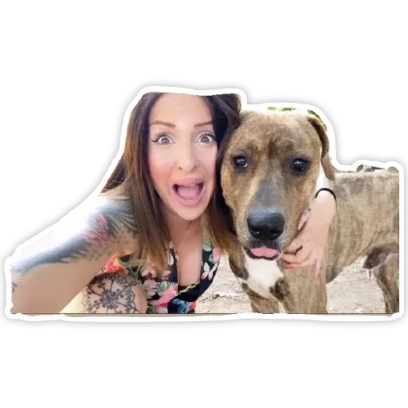
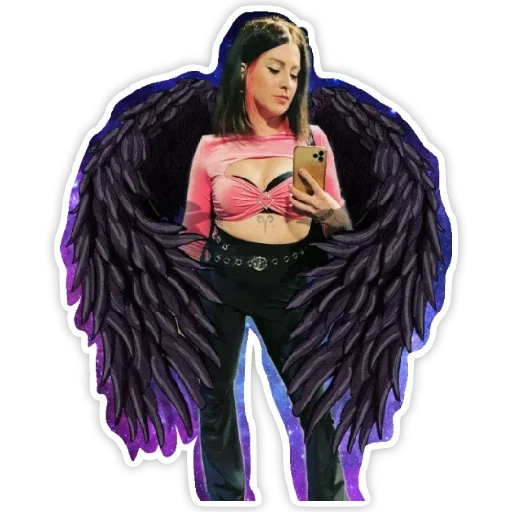
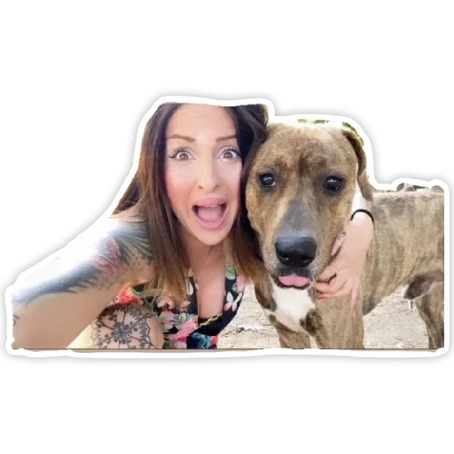
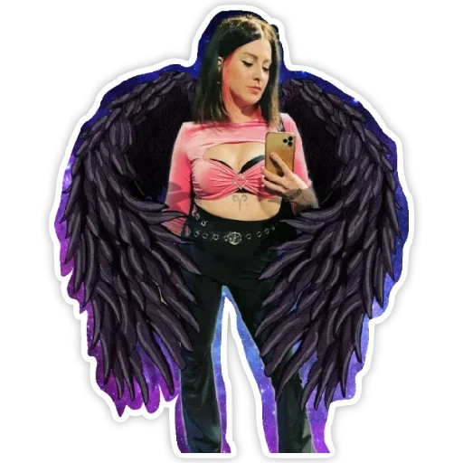
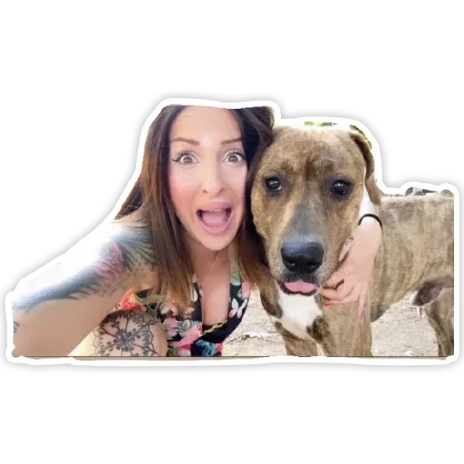
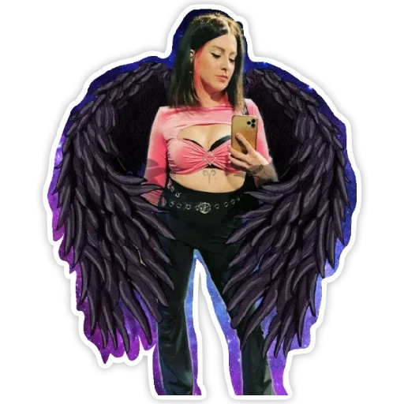

questi sono solo alcuni degli stickers di Katy
 




sono dal lunedi fino al giovedi dalle 15:00 fino alle 18:00
nuovo video ogni venerdì alle 14:30 sul canale youtube, gli ultimi 7 video li puoi vedere direttamente qui
se stai cercando un video usa la ricerca che trovi qui
questi sono solo alcuni degli stickers di Katy


se vuoi dei tatuaggi fatti da Katy puoi contattarla tramite instagram
PS: contattala solo se hai l'intezione di fareti un tatuaggio
social di Katy